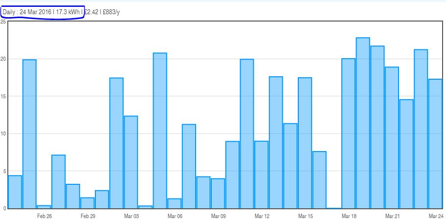
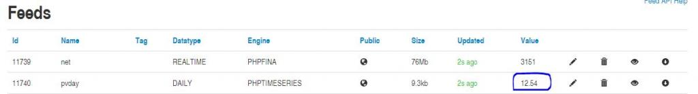
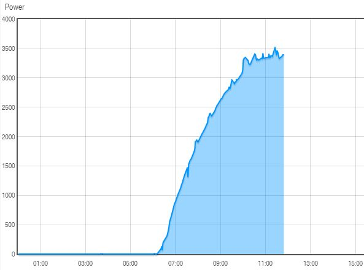

During yesterdays work on emoncms.org (see this thread) a portion of accumulating kWh and kWh/day feeds got reset. I'm working on a solution which will involve the ability to run a processor over these feeds to fix the reset.
This was a feature I was planning to add anyway, as it would be useful to have the ability to build for the first time or rebuild existing feeds from power data which is a similar post processing operation. Ultimately, I think the direction for emoncms.org should be to move away from the kWh/d data type, towards accumulating kWh which allows hourly, daily, monthly totals to be calculated on the fly, and is time zone independent, as well as being an easier value to compare to a reference such as a billing meter.
The tool will include a page in emoncms from which a feed can be selected to reprocess or build from a power feed. The processor will run the job in the background.
Re: emoncms.org: incorrect kWh data
Part one of this tool is the processor that works through the feed, I've uploaded this for anyone who can make use of it on a local emoncms system: https://github.com/emoncms/usefulscripts/blob/master/process/accumulating_kwh_reprocessor.php
The next step is to create a job queue that will run this automatically from an emoncms page.
Re: emoncms.org: incorrect kWh data
Hi Trystan,
Thanks for all the work you put into Emoncms, it is much appreciated, but yesterdays modification seems to have screwed up my kWh data.
I noticed my kWh feeds have been rebuilt, I assume from power data, however as my power data over the last couple of years has been very patchy due to unreliability of my rpi and 3G router and regular downtime while rebuilding images etc, the resulting rebuilt kWh feeds are nothing like the original feeds which were created from the kWh calculated onboard my emontx which by the design of the sketch is not affected by the rpi and router etc downtime. Some of the feeds are now over 1000 kWh low compared to the original feeds which had been keeping pace with my utility meters, where present, within +- 10 kWh/ yr.
Is there any way to revert my kWh feeds to what they were yesterday morning before you ran the script? I could then realign them using edit realtime.
Re: emoncms.org: incorrect kWh data
Having looked at this some more and trying to understand the useful scripts accumulating_kwh_reprocessor.php it looks as though the script has removed any increases in kWh larger than could be obtained from a set max power value. I think this has removed any previous adjustments I've made with edit realtime to align the feeds with my utility meters??
When I first set up the feeds, I used "edit realtime" to fast forward the feeds to line up with the utility meters, then periodically I would repeat the edit realtime (and also alter the calibration constants in the emontx) to reduce, over time, any calibration errors. Is it these jumps in the kWh feeds that the script has removed??
Re: emoncms.org: incorrect kWh data
Yes they can be reverted, I have kept backups pre conversion. Yes they were re-built according to Wh accumulator rules, correcting for historic resets and jumps. I see what you have done now. I'm happy to revert or perhaps better, only apply the correction from 11am on the 25th so you can recover all the data over the last couple of days?
I ran this script on all Wh accumulator feeds on the second storage server which was only 44 feeds all of which I have backups for and can revert.
Re: emoncms.org: incorrect kWh data
Thanks Trystan,
That would be great if you could just apply the correction from 11am on 25th.
Re: emoncms.org: incorrect kWh data
@nrgbod, ok I think that's it, let me know if you can see any issues.
Re: emoncms.org: incorrect kWh data
They all seem to be back to normal except for one feed, I think, which still looks as though it has all the large increments removed. Feed number 46036 which is at 1749 kWh and should be around 3000 kWh from memory.
Re: emoncms.org: incorrect kWh data
Should be fixed now
Re: emoncms.org: incorrect kWh data
Yes, fixed now, thanks.
Just noticed another feed which hasn't reverted.....feed number 83367. I think that's the last óne :-)
Re: emoncms.org: incorrect kWh data
@ngbod I will take a look at that one for you now.
I have applied the same after 11am on the 25th of Feb removal of reset correction to all power_to_kWh feeds on storage server 2 (which I think is the main place that this issue is effecting, about 456 feeds altogether).
The script made an automatic backup prior to correcting each feed, so if anyone spots an issue please let me know.
This issue has also affected daily kWh data, but automatically recalculating this is a bit more complex. Its possible to edit daily data in the edit daily visualisation for anyone keen to at least remove very large bars - otherwise I will need to build the post processing interface I mentioned above to provide a way of rebuilding these feeds which I will continue with.
Re: emoncms.org: incorrect kWh data
@ngbod I've reverted and then applied the after 11am on the 25th of Feb fix to 83367
Re: emoncms.org: incorrect kWh data
The edit daily vis doesn't seem to work properly with kWh to kWhd feeds AFAIK. What I have found happens is I will remove a rogue peak of say 500 kWh using the edit daily vis. The rogue peak will indeed be removed but the kWh to kWhd feed then remains frozen until the feed has incremented by a further 500kWh over say the next 50 days to get back to were it was. From what I understand this is correct behaviour as the kWh to kWhd accumulator is not allowed to record reducing values. Maybe an exception should be added to the code to allow reducing values if instigated by the edit daily vis?
Re: emoncms.org: incorrect kWh data
Ok I will take a look at that.
Checking further feeds I see this issue does affect some power_to_kWh and Wh_accumulator feeds on the main server too, although not all.
Re: emoncms.org: incorrect kWh data
Feed 83367 is back to normal now, thanks.
Re: emoncms.org: incorrect kWh data
Most of the affected power_to_kwh and wh_accumulator feeds have now had the correction applied. For anyone seeing ongoing issues please send me a direct message with the feedid and I can investigate. Otherwise, I will post details once I have built the post-processing tool.
Re: emoncms.org: incorrect kWh data
I've fixed the operation of the daily data editor so that its now possible to edit historical days, although not the current day.
Re: emoncms.org: incorrect kWh data
Hi Trystan
ultimately I think the direction for emoncms.org should be to move away from kWh/d daily data types towards accumulating kWh as standard which allows hourly, daily, monthly totals to be calculated on the fly
In case it helps your decision processes - I wholeheartedly agree that a cumulative total (kWh or whatever) plus aggregating tools (e.g. kWh by week) is the way to go.
Thanks for all your efforts
Mike
Re: emoncms.org: incorrect kWh data
Hi Trystan,
I'm still missing some cumulative data for my LEAFs electric usage. Namely feeds 47770, 48330, 48421 and 48704. All read zero since Feb 25th, but the data is still there. Any chance you can look into it?
Cheers!
Re: emoncms.org: incorrect kWh data
Trystan you said....I've fixed the operation of the daily data editor so that its now possible to edit historical days, although not the current day.
I've tried editing my kWhd feeds using the "edit daily" visualisation on emoncms.org but I can't get it to work. Is this the same daily data editor you were working on?
Re: emoncms.org: incorrect kWh data
@Vester, I can see the issue these are PHPFiwa feeds rather than PHPFina which are now standard for cumulative data. I will convert and run the process to fix these feeds.
Re: emoncms.org: incorrect kWh data
@Vester I have PM you about your feeds. I've managed to fix one of them.
Re: emoncms.org: incorrect kWh data
On emoncms.org I have some feeds which are calculated by dividing one kWhd feed by another kWhd feed but since 27/02/16 all of these calculated feeds have stopped working correctly. See input config page attached.
Up until the 27th this node had an input processor calculating what percentage of my car charging was coming from solar during the E7 peak period each day. Since the 27th the ability to divide one kWh to kWhd feed by another kWh to kWhd feed seems to have been removed. If it has been removed was this intentional?
I have similar calculations on other nodes which also stopped working correctly on the 27th.
Re: emoncms.org: incorrect kWh data
Hi Trystan,
excuse me but I have same problem.
Namely feeds 57904, 51102,57903 are going crazy.
All working fine before two days ago.
my dashboard is this
http://emoncms.org/glonline&id=27551
thank you for your help
Gabriele
Re: emoncms.org: incorrect kWh data
@nrgbod, @glonline Im investigating the problem will get back to you both soon on this
Re: emoncms.org: incorrect kWh data
@nrgbod, @glonline, It looks like I made a mistake when I ran a maintenance script to delete duplicate input processors that where logging to the same target feeds. I have restored the input processing for the inputs affected. This should provide the correct behavior from today but does not fix the last couple of days of now incorrect data on these feeds. I will look into a solution for this.
Re: emoncms.org: incorrect kWh data
Thanks Trystan that's great, I'll check them later when the sun comes out.
Regarding the few days of incorrect data, if it was possible to edit historical daily data by the edit daily vis or whatever means then I could calculate from the base feeds and update manually. I could also edit out the odd excessively high daily bar chart records that tend to 'flatline' the long term views of the barcharts.
Re: emoncms.org: incorrect kWh data
@nrgbod, I've fixed the daily data editor to work with phptimeseries data so you should be able to do that now.
Re: emoncms.org: incorrect kWh data
Thanks Trystan the daily editor is working fine now. All my kWhd feeds now have the fluke days edited to sensible values.
Re: emoncms.org: incorrect kWh data
Hallo Tristan,
I have no word.
Everything is ok and you solve even daily editor.
Thanks a lot
Gabriele
Re: emoncms.org: incorrect kWh data
Hi Trystan,
I found this morning that all my kwh/d feeds gone crazy. Please see an example attached.
Is it possible to restore them somehow? It seems that i have lost 1.5 years of historical data :(
Many thanks for any hints/help.
Kind Regards,
Attila
[Duplicate post deleted. Moderator (RW)]
Re: emoncms.org: incorrect kWh data
Hi
All my kwh/d data have been restored. Thank you for the quick help.
Regards,
Attila
Re: emoncms.org: incorrect kWh data
Hi Trystan,
thanks for your job!!
From some days I have problems in my zoom visualization of accumulated kWh. The Data on FEED it's correct but not in the graph. For example in this moment:
FEED ID 11740=pvday value=12.36
Dashboard Zoom graph=17.3


the problem it's the same in every datatime=daily
The zoom it's correct

Bye!